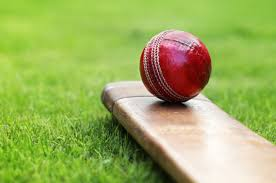

Basic Rules of Tennis
- Cricket is played between two teams
- Games comprise of at least one innings where each team will take turns in batting and fielding/bowling.
- The fielding team will have a bowler bowl the ball to the batsman who tries to hit the ball with their bat.
- The fielding team must get 10 batsmen out before they can change over and start batting.
- The aim of the game is to score as many runs as possible before the fielding team takes 10 wickets. The team with the most runs wins.
- The team with the most run wins